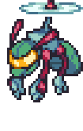
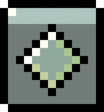
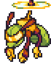
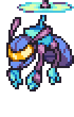

| ← #072 ??? | #073 Patterbit | #074 Pitterbyte → |
|---|
| Normal Form | Corodex Description | Type |
|---|---|---|
|  | Patterbit are popular amongst Lux Solis researchers as lab assistants, due to their customisable intelligence. |  |
| Potent Form | Locations Data | Evolution Line |
|  | - Radiant Park | - Patterbit - Pitterbyte (Install a kernel on Donar Island) |
| Perfect Form | Traits | |
|  | - Overclocker (??/70) - Conductor (??/70) - Robber (??/70) |
| Stats | |
|---|---|
| HP | 67 |
| Attack | 35 |
| Defense | 40 |
| Sp. Attack | 47 |
| Sp. Defense | 42 |
| Speed | 25 |
| Skill set | |
|---|---|
| Level 1 | Slam |
| Level 5 | Feelers |
| Level 9 | Propellor Punch |
| Level 15 | Factory Reset |
| Level 22 | Face Slap |